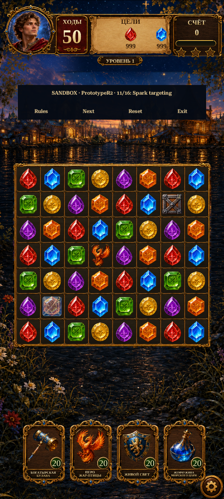

Gameplay Mechanics R2
Development sandbox for square-created Firebird Sparks and deterministic seeking flights. The approved gameplay art is reused. Live campaign rules remain unchanged.
Actual Unity capture · 576×1280. Synthetic fixture with 50 moves and oversized test goals. Not a balanced campaign level.

Playback advances sampled screenshots for inspection; its speed is not measured game frame pacing. Falling gems retain the existing refill presentation. Developer controls are not production UI.
Try the prototype in Unity
Enter Play Mode, reach Home, close any modal, then choose Legends of Rus → Development → Gameplay Mechanics Sandbox. Rules cycles Legacy/R1/R2; Next cycles sixteen R2 fixtures; Reset restores the fixture; Exit returns Home. Inventory is temporary.
What changed
- Match a same-color 2×2 square to create a Firebird Spark.
- Tap or swap a Spark to launch; targets prefer obstacles, then specials, then ordinary gems.
- Two Sparks produce three flights; line/bomb payloads fire at landing; Color transforms its partner color into Sparks.
- Flight destinations and payloads are recorded in the versioned plan and replay hash. Approved Firebird artwork is reused.
What remains
Runic seal, goal-aware targeting, richer payload choreography, production rule migration, intensity tuning and Android performance checks. Review these mechanics before expanding the held 50-round plan.
Implementation report · Test evidence · Changed files · R7 specification